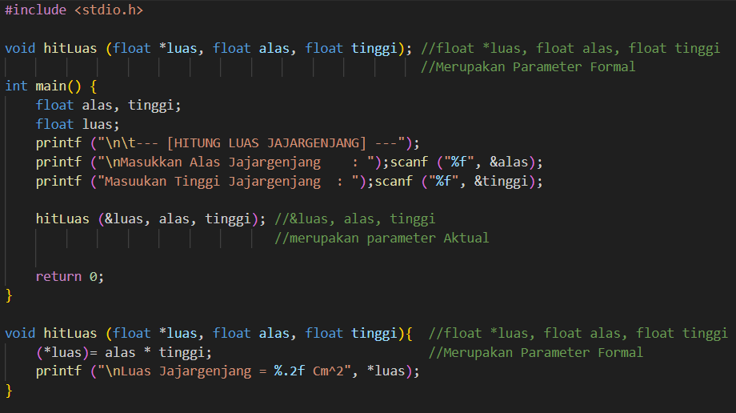

19-06-2024
120k Suka

Prosedur adalah serangkaian instruksi untuk menyelesaikan tugas tertentu dalam program komputer. Tahapan dalam membuat prosedur meliputi:
1. Analisis Masalah: Mengidentifikasi masalah yang harus diselesaikan.
2. Desain Solusi: Merencanakan urutan instruksi untuk menyelesaikan masalah.
3. Implementasi: Menerapkan desain solusi dalam bahasa pemrograman.
.png) Contoh Penggunaan Prosedur
Contoh Penggunaan Prosedur
.png) Output dari Contoh Penggunaan Prosedur
Output dari Contoh Penggunaan Prosedur
Parameter input adalah parameter yang isi (value) nya sudah jelas terdefinisi ketika dilakukan pemanggilan prosedur dan tidak berubah selama pemrosesan prosedur.
.png) Program untuk Menghitung Luas Persegi Panjang
Program untuk Menghitung Luas Persegi Panjang
Parameter output adalah Parameter target yang hendak diubah nilainya atau parameter yang menampung hasil keluaran dari prosedur. Salah satu ciri khas dari parameter output dalam prosedur yaitu terdapat pointer yang menempel pada nama variabel nya. Perhatikan contoh berikut.
.png) Program untuk Menghitung Luas Persegi Panjang
Program untuk Menghitung Luas Persegi Panjang
Parameter input/output berfungsi sebagai input dan output (sebagai masukan sekaligus keluaran bagi prosedur tersebut). Berikut merupakan contohnya.
.png) Program untuk Menukar nilai dua variabel
Program untuk Menukar nilai dua variabel
Pada passing parameter by value, nilai parameter disalin ke dalam variabel baru di dalam prosedur, namun tidak mengubah nilai asli.
.png) Prosedur dengan Passing Parameter by Value
Prosedur dengan Passing Parameter by Value
.png) Output dari Prosedur dengan Passing Parameter by Value
Output dari Prosedur dengan Passing Parameter by Value
Pada passing parameter by reference, Alamat memori dari variabel disalin ke dalam prosedur dan mengubah nilai asli.
.png) Prosedur dengan Passing Parameter by Reference
Prosedur dengan Passing Parameter by Reference
.png) Output dari Prosedur dengan Passing Parameter by Reference
Output dari Prosedur dengan Passing Parameter by Reference
Prosedur dapat dipanggil darimana saja, dari main() function, dari fungsi lain, maupun dari prosedur lain. Perhatikan contoh berikut.
 Program untuk menukar nilai
.png) Output dari Program untuk menukar nilai
Output dari Program untuk menukar nilai
Pada program untuk menukar nilai dapat dilihat bahwa terdapat pemanggilan prosedur oleh prosedur lain, yaitu prosedur tukarNilai dipanggil di dalam prosedur prosesPenukaran. Hal ini dapat membuat program lebih efektif karena kita tidak perlu untuk menulis ulang struktur code dari tukarNilai ketika ingin digunakan, tetapi kita hanya perlu memanggil prosedur tukarNilai kedalam prosedur prosesPenukaran. Fungsi
5 Komentar
Komentar Pengguna
Mahasiswa Informatika
19-06-2024Kelvin deodorant
19-06-2024Verdi Tokyo Mokyo
20-06-2024Alfredo Pangsit
20-06-2024Kelvin Majapahit
22-06-2024Verdi Hime
23-06-2024